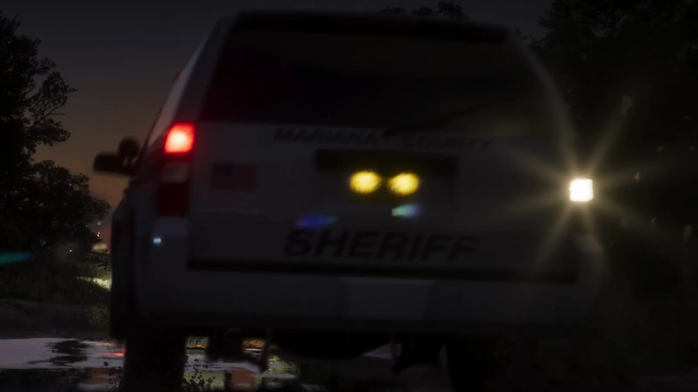
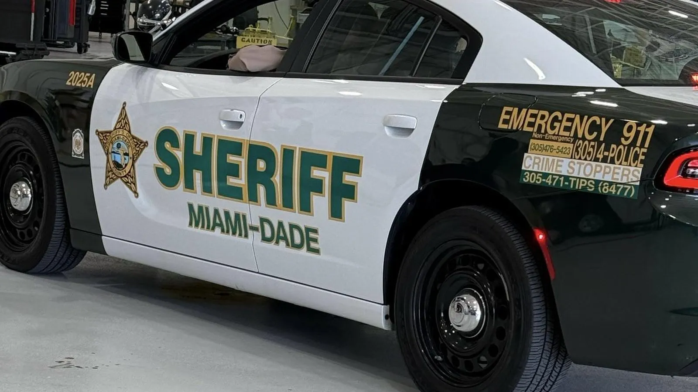

Машина шерифа из трейлера GTA 6 и шерифы Флориды
Опубликовано:
Машина с надписью SHERIFF — обычная часть Флориды: в каждом из 67 округов штата есть выборный шериф и свои патрульные машины. В кадре ничего не переделано и не высмеяно — показано как есть.


- В третьем трейлере GTA 6 ночью на лесной дороге — белый внедорожник с надписью SHERIFF, впереди мигают синие огни других машин.
- Во Флориде 67 округов, и в каждом — свой выборный шериф.
- Майами-Дейд был исключением: в 1966 году избиратели отменили должность шерифа после коррупционного скандала.
- В 2018 году штат обязал все округа выбирать шерифа, и 7 января 2025 года Майами-Дейд впервые с 1966 года получил выборного шерифа.
Что в игре
Около 1:11 третьего трейлера (15 октября 2026) — ночь, тёмная дорога среди деревьев. Камера едет за белым внедорожником: сзади крупно написано SHERIFF, рядом флаг США, над номером — название округа (в кадре размыто). Впереди на дороге мигают синие огни других машин. Кадр длится около секунды.
Значит, в Леониде кроме городской полиции есть и шерифы — как в настоящей Флориде.
Что в реальности
Во Флориде 67 округов, и в каждом — выборный шериф. Их объединяет Ассоциация шерифов Флориды (Florida Sheriffs Association).
Но у Майами была своя история. Как пишет WLRN, в 1966 году избиратели Майами-Дейд отменили должность шерифа из-за большого коррупционного скандала. С тех пор полицию округа возглавлял руководитель, которого назначал мэр. Майами-Дейд оставался единственным округом Флориды без шерифа.
В 2018 году избиратели штата одобрили поправку к конституции: в каждом округе должен быть выборный шериф. И 7 января 2025 года в Майами-Дейд принёс присягу первый выборный шериф с 1966 года.
По данным WLRN, Офис шерифа Майами-Дейд — крупнейшее правоохранительное ведомство Флориды: больше 3 000 полицейских и больше 1 000 гражданских сотрудников. Это больше, чем дорожный патруль всего штата (Florida Highway Patrol).
Совпадает и отличается
| Флорида | GTA 6 | |
|---|---|---|
| Надпись SHERIFF на патрульной машине | Да, у офисов шерифов | 🟢 Да |
| Патруль на дорогах вне города | Да | 🟢 Да, лесная дорога |
| Название округа на машине | Своё у каждого из 67 округов | 🟡 Есть, но в кадре размыто |
Источники: Rockstar Games — третий трейлер GTA 6 (15 октября 2026); WLRN — о присяге шерифа Майами-Дейд (7 января 2025); WLRN — «Amendment 10 passes, promising a huge change to Florida’s largest police department» (6 ноября 2018); Florida Sheriffs Association; Wikimedia Commons — фото Twiney (CC0).
Реальные фото: Фото: Twiney, CC0 · Wikimedia Commons. Кадры игры: Rockstar Games.
Каждый день — одно сравнение: кадр игры рядом с реальным фото. Подписывайтесь:
YouTubeInstagramTikTok
 vs
vs